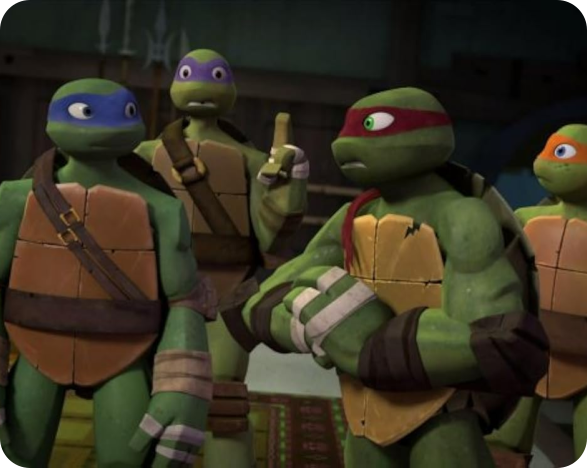

«Черепашки-ниндзя» — это культовый бренд, который стал неотъемлемой частью поп-культуры с момента своего появления в 1980-х годах. История их создания полна интересных фактов и неожиданных поворотов, которые привели к тому, что эти герои завоевали сердца миллионов поклонников по всему миру.
«Черепашки-ниндзя» — это культовый бренд, который стал неотъемлемой частью поп-культуры с момента своего появления в 1980-х годах. История их создания полна интересных фактов и неожиданных поворотов, которые привели к тому, что эти герои завоевали сердца миллионов поклонников по всему миру.
Начало: Комиксы
История «Черепашек-ниндзя» начинается в 1983 году, когда два художника из Нью-Джерси, Кевин Иствуд и Питер Лэрд, решили создать комикс, который сочетал бы элементы боевых искусств и юмора. Вдохновение для создания персонажей пришло от различных источников, включая японские фильмы о ниндзя и классические комиксы Marvel. Первоначально комикс был задуман как пародия на популярные на тот момент супергеройские истории.
Первый выпуск комикса был выпущен в мае 1984 года под маркой Mirage Studios. Он был напечатан в ограниченном количестве и быстро привлёк внимание читателей благодаря своему уникальному стилю и интересным персонажам. Комикс отличался мрачным тоном и более серьёзным подходом по сравнению с тем, что будет представлено позже в мультфильмах и кино.
Успех мультсериала
С ростом популярности комиксов «Черепашки-ниндзя» привлекли внимание компании Playmates Toys, которая увидела потенциал в создании линии игрушек на основе персонажей. В 1987 году вышел анимационный сериал, который кардинально изменил восприятие черепашек. Мультфильм стал ярким и весёлым, в отличие от более серьёзного оригинала, и акцентировал внимание на дружбе между черепашками и их борьбе с различными злодеями.
Мультсериал стал настоящим хитом, что привело к созданию обширной линии игрушек, видеоигр и других товаров. В течение нескольких лет «Черепашки-ниндзя» стали одним из самых узнаваемых брендов среди детей и подростков.

Переход в кино
Успех мультсериала открыл двери для создания полнометражных фильмов. Первый фильм «Черепашки-ниндзя» вышел в 1990 году и стал коммерчески успешным. Это была смесь живого действия и кукольной анимации, которая позволила создать реалистичные версии черепашек. Фильм сохранил дух оригинальных комиксов, но при этом привнёс элементы, характерные для мультсериала.
Следующие фильмы, такие как «Черепашки-ниндзя II: Тайна изоленты» (1991) и «Черепашки-ниндзя III» (1993), продолжили историю черепашек, однако не смогли достичь такого же успеха, как первый фильм.
Возрождение и новые версии
В начале 2000-х годов интерес к «Черепашкам-ниндзя» возродился благодаря новым мультсериалам. В 2003 году вышел новый анимационный сериал, который вернулся к более серьёзному тону оригинальных комиксов. Этот проект также способствовал созданию новых игрушек и видеоигр.
В 2007 году был выпущен анимационный фильм «Черепашки-ниндзя», который использовал компьютерную графику и предложил свежий взгляд на знакомую историю. Фильм получил положительные отзывы и вновь напомнил зрителям о приключениях черепашек.
Современные адаптации
В 2014 году «Черепашки-ниндзя» вернулись на большие экраны с новым живым экшен-фильмом, продюсером которого стал Майкл Бэй. Фильм вызвал смешанные отзывы критиков, но собрал неплохую кассу. В 2016 году вышел сиквел «Черепашки-ниндзя: Выход из тени», который продолжил историю.
В 2020-х годах франшиза продолжила развиваться с новыми анимационными проектами и играми. В частности, в 2023 году был анонсирован новый анимационный фильм под названием «Teenage Mutant Ninja Turtles: Mutant Mayhem», который обещает вернуть черепашек к их корням.
Заключение
«Черепашки-ниндзя» прошли долгий путь с момента своего создания в комиксах до современных адаптаций в кино и телевидении. Их история — это пример того, как оригинальная идея может трансформироваться и адаптироваться к разным форматам, оставаясь актуальной для новых поколений зрителей. Черепашки продолжают вдохновлять и развлекать, оставаясь символом дружбы, смелости и приключений.